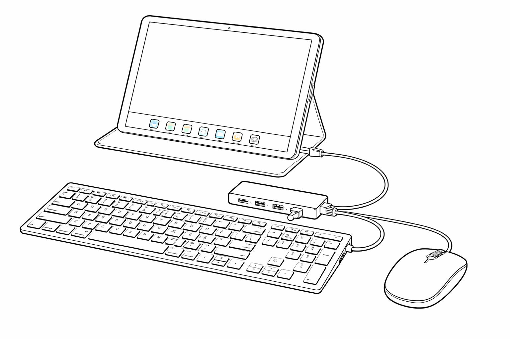
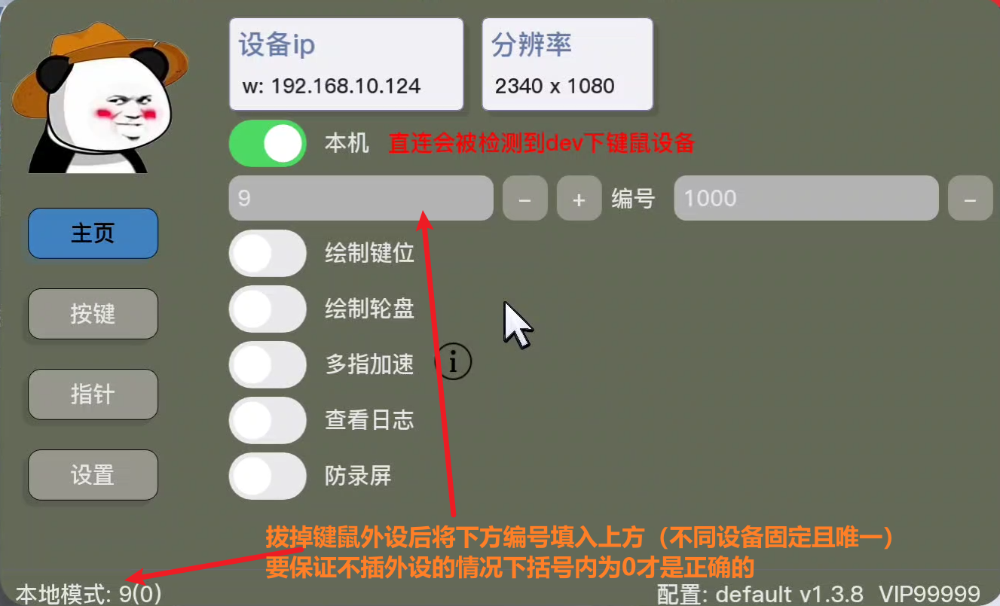
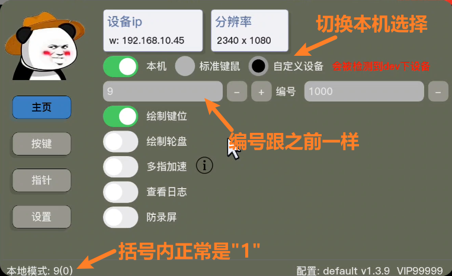
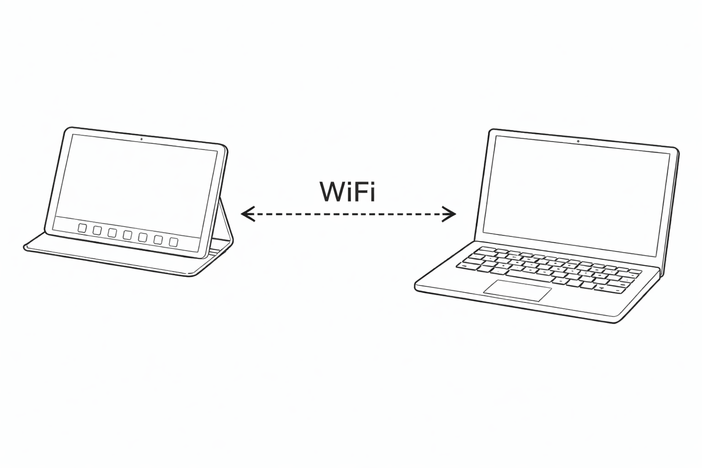
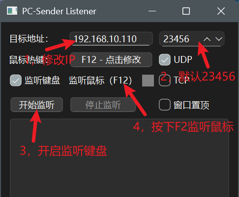
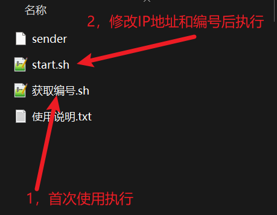

使用手册
本手册面向用户快速完成键鼠映射、联网连接与按键调校。
注意：运行本程序设备要求root权限！
快速开始
以局域网双机（PC + Android）为例，可自行更换其他连接方式
1，准备文件
群文件下载PC发送端压缩包到电脑并解压运行exe程序，下载shushuys压缩包到手机运行sh脚本，首次使用先选择GPU版本进行配置。
2，连接
将设备连接到同一局域网下，先执行手机端sh脚本，将主页显示的IP地址输入到PC端程序中，点击开始监听，连接完成。
3，映射配置
自行进行键位配置或导入他人配置文件到程序并加载。
4，开始
按下配置热键（默认ESC）退出配置界面，开始游玩。
连接方式
可选键鼠直连或双机局域网连接
本机直连

- 1) 设备：能正常使用的键鼠设备和拓展坞
- 2) 步骤：插上键鼠运行sh脚本并切换到本机模式即可
注意：会暴露键鼠设备，某些游戏会检测

自定义设备(不会被手机/平板识别为键鼠 只能通过PC发送端的usb模式实现)


局域网双机连接

- 1) 设备：连接在同一局域网下的电脑/另一台安卓设备
- 2) 步骤：先运行手机端sh脚本，将IP地址输入到发送端后运行，开始连接
局域网：同一个WIFI/热点等
PC 发送端
- 运行exe文件，填写IP地址后开始监听，按下F2监听鼠标

Android 发送端（root）
- 修改文件里的start.sh里的IP地址和设备编号后执行

参考延迟对比
直连
＜
USB 网络共享（推荐）
＜
网线直连（双机都要）
＜
热点（其中一个设备开）
＜
Wi-Fi